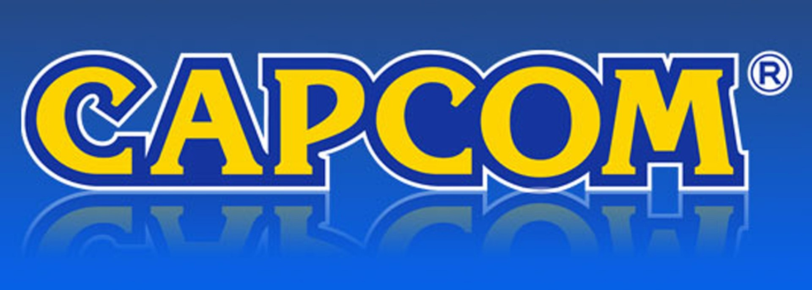

Capcom anticipa el mejor año fiscal de su historia; 90% de ventas en formato digital
La compañía compartió sus expectativas para el último trimestre y esperan romperla con Resident Evil 4
La historia de Capcom ha sido de altibajos pero la compañía japonesa siempre encuentra la manera de regresar a la cima. Actualmente, nos encontramos en uno de sus mejores periodos, de hecho en uno que podría hacer historia si se cumplen las expectativas de venta que tiene la empresa de videojuegos para el final del año fiscal en curso.

Capcom en camino a tener el mejor año fiscal en su historia
Capcom presentó su informe financiero correspondiente con el tercer trimestre del año fiscal (vía VGC) donde uno de los datos a destacar fue la venta de 29.1 millones de copias para diciembre de 2022. De acuerdo con la compañía, si la tendencia sigue, espera vender más de 40 millones de copias de sus juegos con lo que tendría el mejor año fiscal en su historia en materia de venta de videojuegos. De hecho, los números de Capcom han destacado por presentarse al alza, algo extraño en los reportes financieros recientes que confirman una caída tras la llegada del periodo pospandemia pero en el caso de la compañía de Street Fighter, Monster Hunter y Resident Evil no es así ya que vendió 3 millones de copias más que en el mismo periodo del año fiscal anterior.
Por otra parte, un detalle a considerar es que el éxito de Capcom también da cuenta del cambio en las preferencias de consumo en la industria de los videojuegos pues en el mismo reporte y las expectativas, la compañía anticipa que 90% de sus ventas será en formato digital, mientras que el resto quedará en formato físico.
Asimismo, Capcom se muestra entusiasta en alcanzar la meta de 40 millones de copias vendidas pues además del buen ritmo de los títulos que ya tiene en el mercado, espera que Resident Evil 4 Remake haga lo propio y sea ese éxito que le permita cerra el año fiscal en todo lo alto pues debutará el 23 de marzo.